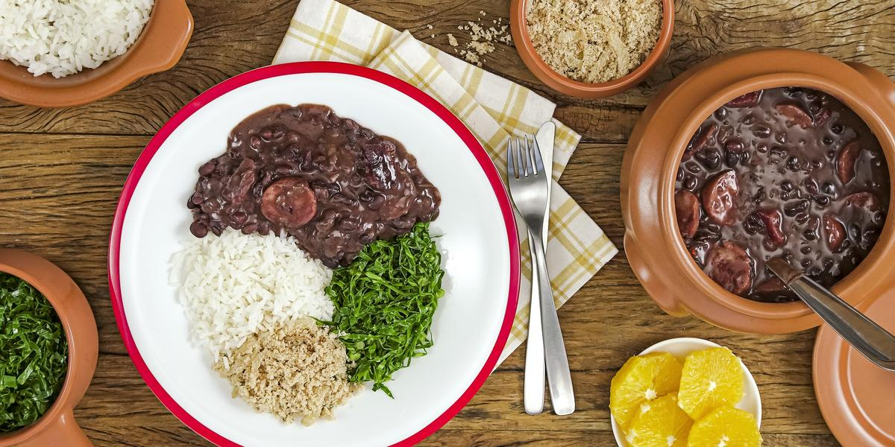

Feijoada

About
Feijoada is a typical Brazilian dish. Despite being a dish with many variations, the complete feijoada is the one that takes all the salted meats (ribs, varied sausages, jerky, foot, ear, tail, loin, bacon) and is typical with slices of orange, cabbage braised in garlic, rice and farofa.
Ingredients
- 1kg of black beans
- 100g of dried meat
- 70g of pig's ear
- 70g of pig's foot
- 70g of pig's tail
- 100g of pork rib
- 50g of pork loin
- 100g of pepperoni sausage
- 150g of portuguese sausage
- 2 big chopped onions
- 1 chopped chive
- 6 garlic cloves
- 3 bay leaves
- Black pepper to tase
- 1 or 2 oranges
- salt if needed
Steps
- Place the beans in a sieve and wash well under running water. Transfer the beans to a large bowl and cover with 2.5 liters of water if any float, discard. Cover with a plate and leave to soak for 30 minutes if the beans are soaked for a long time, they may lose their color and fall apart during the long cooking of the feijoada. Meanwhile, pre-cook the meats.
- Drain the water from the desalted meats and transfer to a large cauldron (or pan) with a capacity of 11 liters. Cover the meats with water and place over high heat about 4 liters are enough, the amount can vary according to the size of the pan, the important thing is that the meats must be completely immersed. Let it cook for 10 minutes on high heat, counting after boiling pre-cooking eliminates excess fat and salt from the meats.
- Meanwhile, peel and finely chop the onions and garlic cloves. With a small knife, remove the skin from the pepperoni. Drain the water from the beans.
- After 10 minutes, with a slotted spoon, transfer the pre-cooked meats to a large bowl and discard the cooking water, being careful not to burn yourself.
- Return the cauldron to high heat. When hot, drizzle with oil, add the onion and season with a pinch of salt. Sauté for about 8 minutes until it starts to brown. Add the garlic, cumin, bay leaves and stir for 1 minute to perfume.
- Add the soaked beans to the sautéed and mix well. Add 6 liters of water and keep the pan on high heat. As soon as it starts to boil, add the pre-cooked jerky and ribs, lower the heat and let it cook for 2 hours, stirring occasionally.
- After the first 2 hours of cooking, add the pre-cooked loin and the whole pepperoni. Let it cook on low heat for another 3 hours, stirring from time to time gently so as not to break up the beans.After the first 2 hours of cooking, add the pre-cooked loin and the whole pepperoni. Let it cook on low heat for another 3 hours, stirring from time to time gently so as not to break up the beans.
- With 30 minutes left before the end of cooking, with tongs, transfer the paios to the board and cut each one into 1 cm slices, diagonally. Return the slices to the pan and cook until the 5 hours of cooking is complete, or until the meats are very tender and the feijoada broth begins to thicken. Serve with rice, braised cabbage, orange wedges and toasted manioc flour.